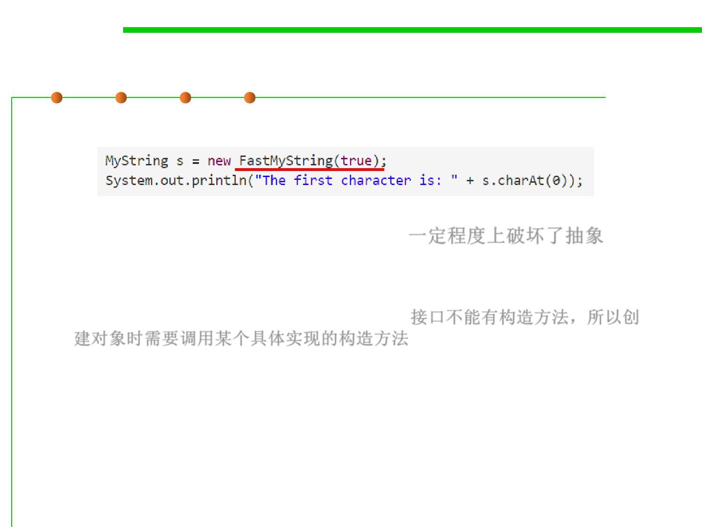

3.4 Object-Oriented Programming (OOP)
To use MyString and its implementations
▪ Problem: breaks the abstraction barrier 一定程度上破坏了抽象
– Clients must know the name of the concrete representation class.
– Because interfaces in Java cannot contain constructors, they must directly
call one of the concrete class’ constructors. 接口不能有构造方法，所以创
建对象时需要调用某个具体实现的构造方法
– The spec of that constructor won’t appear anywhere in the interface, so
there’s no static guarantee that different implementations will even
provide the same constructors.